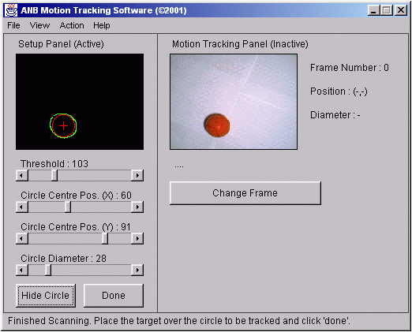

Contents
- Summary
- Introduction
- Design & Specification
- Implementation & Testing
- Project Management
- Conclusions
- Appendix
- Bibliography
©2000-2001 Adrian Banks
Last Updated : 18th May 2001
Last Updated : 18th May 2001
Project Achievement
The project has had various stages of success. Firstly, the edge detection part of the project has been developed to work quickly and effectively for any image. A full image with over 19000 pixels (160 by 120 pixel dimensions) can be scanned and edges calculated in less the half a second. This enables the system to grab the edges from an image in real-time, without a considerable delay while the image is analysed.
Secondly, basic motion tracking has been achieved by using the circle comparison technique described earlier. This has not however been very successful in testing with the system detecting the new location of the circle with a low success rate. With more time, this basic method could be developed to be more sophisticated to give a higher circle detection success rate.
Thirdly, for reasons discussed later, the task of capturing a live video feed was transferred from the third year part to the fourth year part of the project. This was successful using the Java Media Framework, despite extremely limited documentation and support for this newly developed extension to the Java language.
Third Year Project
The third year part of the project has been successful to the extent that the camera has been mounted on the mounting rig and is controllable on two dimensional axes via the serial port of a PC using a microcontroller (an Atmel AT89C52) to directly translate control characters into movement signals. This is controlled by a graphical user interface coded in Java.
Both of these components (the graphical user interface and the microcontroller circuit) were successfully designed and coded as part of the third year project.
Access to the video feed has not been achieved as part of the third year project due to problems discussed later.
Problems Encountered
Throughout the course of the project, several problems have been encountered that have had to be accommodated.
Firstly, the main problem of both the third year and fourth year projects was that the video feed from the camera was not available when expected in the project plan. This was due to java language and more specifically support and driver problems associated with the webcam and the Java Media Framework. This has been worked around by not using the webcam to capture the image data. Instead, a series of still images are used to simulate a series of frames from a live video feed. This works adequately for testing purposes. Meanwhile, the camera code was developed without further hindrance to the rest of the project.
Secondly, the networking side of the project has been eliminated, mainly due to time restrictions. Control signals will be determined by image analysis and simply displayed to the user. With further time, this could be developed.
Finally, there was a change to the third year part of the project. The layout of the camera's mounting was changed to enable standardised plans views with the circle retained at the centre to keep its size constant whist the camera is moving. The camera instead is mounted on two tracks to enable it to move over the whole area of the track below (see "Camera Mounting Rig" section in the Appendix).
Algorithms
Apart from the graphical user interface, the main areas of the project that needed to be programmed were the image handling, edge detection and motion tracking aspects of the project.
Image Handling
The image handling routine loads in the initial images to be analysed by the system and stores them in an array of Image objects.
for (i = 0; i < NUM_IMAGES; i++)
{
images [i] = toolkit.getImage(imgname[i]);
tracker.addImage(images[i],0);
try
{
tracker.waitForAll();
}
catch (InterruptedException exc) {}
while (!tracker.checkAll())
{
System.out.println("Please wait.......");
}
if ((images[i].getWidth(this) > IMAGE_WIDTH)
|| (images[i].getHeight(this) > IMAGE_HEIGHT))
{
images[i] = images[i].getScaledInstance(IMAGE_WIDTH,IMAGE_HEIGHT,0);
}
}
To do this, the MediaTracker class is used. This ensures that the application waits for the image to be fully loaded before proceeding. If this was not to happen, memory problems may occur when accessing the stored images. Once the images are successfully loaded, they are rescaled if necessary to the preset size of the ImagePane class using the getScaledInstance() method of the Image class to return a new re-scaled image with the correct dimensions.
Pixel Colour Difference
To perform both edge detection and motion tracking it is necessary to analyse pairs of pixels from within an image to perform pixel colour difference analysis on them. This is done in a method of the ImagePane class designed specifically for this purpose, which is inherited by both the IPSetup and the IPMotion classes (hence the protected declaration of the function).
protected boolean handleSinglePixel(int pixel)
{
alpha = (pixel >> 24) & 0xff;
red = (pixel >> 16) & 0xff;
green = (pixel >> 8) & 0xff;
blue = (pixel ) & 0xff;
redDifference = (redStored - red) * (redStored - red);
blueDifference = (blueStored - blue) * (blueStored - blue);
greenDifference = (greenStored - green) * (greenStored - green);
totalDifference = redDifference + blueDifference + greenDifference;
colourDifference = Math.pow(totalDifference,0.5);
redStored = red;
greenStored = green;
blueStored = blue;
if (colourDifference > IPthreshold)
{
return true;
}
return false;
}
This works by analysing the colours of two adjacent pixels and performing the three-dimensional Pythagorean calculation as described earlier. This gives the distance between the colours of the two pixels when represented on a three-dimensional coordinate system (using their red, green and blue components as the axes). This distance is then compared against a threshold value and a boolean returned to indicate whether an edge has been detected. This threshold value can be altered during run-time to allow sensitivity adjustments to be made.
Edge Detection
The edge detection routine uses the inherited handleSinglePixel() method from the ImagePane class as well as a findEdges() method belonging to the IPSetup class.
public void findEdges()
{
for (j = 0; j < bufferedImage.getHeight(); j++)
{
for (i = 0; i < bufferedImage.getWidth(); i++)
{
if ((handleSinglePixel(bufferedImage.getRGB(i,j)) == true)
&& (i != 0))
{
bufferedImage.setRGB(i,j,5435934);
blackBufferedImage.setRGB(i,j,5435934);
}
}
}
for (j = 0; j < bufferedImage.getWidth(); j++)
{
for (i = 0; i < bufferedImage.getHeight(); i++)
{
if ((handleSinglePixel(bufferedImage.getRGB(j,i)) == true)
&& (j != 0))
{
bufferedImage.setRGB(j,i,5435934);
blackBufferedImage.setRGB(j,i,5435934);
}
}
}
repaint();
}
To do the edge detection, the image is first scanned horizontally and the pixel colour difference routine called with each adjacent pair of pixels in the image as arguments. This is then repeated vertically. Once completed, the edges can be seen on the image since they are plotted using the setRGB() method of the BufferedImage class during the scanning operation.
Motion Tracking
The motion tracking routine also uses the inherited handleSinglePixel() method from the ImagePane class as well as a trackMotion() method belonging to the IPMotion class.
public Circle trackMotion(Image image, Circle circle)
{
// Do a dummy run to set the variables correctly
handleSinglePixel(tempBufferedImage.getRGB(circle.getCentreX(),circle.getCentreY()));
while (timeout < ((int) ((circle.getDiameter() / 2) * 1.1)))
{
if (handleSinglePixel(tempBufferedImage.getRGB(circle.getCentreX()
+ timeout,circle.getCentreY())) == 1)
{
tempBufferedImage.setRGB(circle.getCentreX() + timeout,
circle.getCentreY(),5435934);
}
timeout++;
}
while (timeout < ((int) ((circle.getDiameter() / 2) * 1.1)))
{
if (handleSinglePixel(tempBufferedImage.getRGB(circle.getCentreX()
+ timeout,circle.getCentreY())) == 1)
{
tempBufferedImage.setRGB(circle.getCentreX()
+ timeout,circle.getCentreY(),5435934);
}
timeout--;
}
// once the four edges have been found, do maths and create
// a circle to return with the location of the position
// of the circle in it
repaint();
return paintedCircle;
}
To do motion tracking, the image is first scanned horizontally starting from the centre of the circle in the previous frame of the sequence of images until an edge is detected on both the left and right sides of the starting point. The new x-axis centre location can then be calculated from these measured distances. This is then repeated vertically to find the new y-axis centre position.
Video Capture
The video capture code utilises the relatively new Java Media Framework extension to the Java language to interface successfully with external media hardware attached to the PC.
To capture images from the camera, the jmapps.ui.PlayerFrame class first needs to be extended. This is a core Java Media Framework class that creates a frame suitable for display of a live video feed. An instance of the WebCam class can then be created and the captureMedia() method called to capture a video feed.
private void captureMedia()
{
Format formats [];
String nameCaptureDeviceVideo = "vfw:Philips VGA Digital Camera (Vesta):0";
CaptureDeviceInfo deviceInfo =
CaptureDeviceManager.getDevice(nameCaptureDeviceVideo);
VideoFormat videoFormat = null;
formats = deviceInfo.getFormats();
videoFormat = (VideoFormat) formats[1];
dataSource = JMFUtils.createCaptureDataSource (null, null,
nameCaptureDeviceVideo, videoFormat);
if (dataSource == null)
{
JOptionPane.showMessageDialog(this, "1: Could not connect
to camera\nNot Installed or not plugged in", "Camera
Error", JOptionPane.ERROR_MESSAGE);
System.exit(1);
}
else
{
FormatControl control = ((CaptureDevice)dataSource).getFormatControls()[0];
videoFormat = getDesiredFormat(control);
imageTransfer = new ImageTransfer(videoFormat);
control.setFormat(videoFormat);
try
{
dataSource.connect();
}
catch (IOException ioe)
{
JOptionPane.showMessageDialog(this, "2: Could not connect to
camera\n"+ioe, "Camera Error", JOptionPane.ERROR_MESSAGE);
System.exit(1);
}
open(dataSource);
}
pack();
setVisible(true);
}
This method creates an instance of the DataSource class using the VideoFormat type of the camera already detected. This dataSource is then used to connect to the camera by use of an instance of the MediaPlayer class. The camera is then ready for image capture. Another class, called ImageTransfer, does the actual video capture. This accesses raw data from the camera, reading it as an array of bytes of data from a buffer that was created as the class was instantiated. This is done by the following lines of code :
stream.read(buffer); byte[] data = (byte[])buffer.getData();
As illustrated by the code snippet above, the task of capturing data from the camera is not a difficult one. The problem area is accessing the camera and initialising it properly so that data can be accessed.
Once the data has been accessed and the application closed, the camera must have its resources de-allocated so that other resources may access it. This is done by the close() method of the WebCam class.
public void close()
{
if (mediaPlayer == null)
return;
try
{
dataSource.stop();
}
catch (IOException ee)
{
System.out.println("ERROR - Could not close capture device");
}
dataSource.disconnect();
dataSource = null;
mediaPlayer.stopAndDeallocate();
mediaPlayer = null;
}
This method stops the dataSource from allowing access to the camera and disconnects from it. The dataSource is then set to null to avoid future errors. The mediaPlayer instance is then de-allocated by calling its stopAndDeallocate() method. This is also set to null.
Data Storage
Because the main priority of the project is to do real-time motion tracking, speed was the most important factor when considering how to design any aspect of the project. This posed a problem when addressing how to store the position of the edges within an image to be used when analysing the next frame of the sequence. If every edge was stored, some kind of storage medium would have to be implemented such as a vector or a hash table. Whilst these provide an economical method of dynamically storing large amounts of data, they are relatively slow in the fact that they have to be accessed via their own methods. When these methods are called, at a low level, the stack pointer has to be repositioned to access the data contained in them whilst the method to retrieve the required information is executed. This slows down the execution of the program, especially if the data store is being accessed thousands of times per image.
Instead of storing the entire data for the location of the edges within an image, it was decided to only store the location of the circle in the previous frame. This involves storing just three integers : the x-coordinate of the centre, the y-coordinate of the circle, the diameter of the circle. This reduces the memory requirements of the application, freeing up more resources to do real-time processing. Scanning on two single perpendicular lines is adequate to provide enough information to now calculate the position of the circle in the next frame in the sequence. This process involves very little in the way of resources and is extremely quick.
Graphical User Interface
To enable an application to be developed that would detect edges within an image and perform some sort of motion tracking, a graphical user interface (GUI) had to be coded to display the results of the image analysis in. Figure 3.5a shows the graphical user interface for the system.

Figure 3.5ab : GUI of the system showing the results of edge detection anlysis
This graphical user interface is not intended to be comprehensive for the combined projects, but is simply used to demonstrate the algorithms designed for the image analysis. Because it is stand-alone, however, it could easily be incorporated with the third year part of the project to provide a single user interface as part of a combined system.
Testing
The system is fully event driven and the graphical user interface has been tested extensively during development.
File checking is in place to ensure that the sample images are found, but if not, the error will be handled successfully by the system.
Further error checking is in place throughout the code where necessary, but since the initial aim of the project was to produce class files suitable for incorporation into the third year graphical user interface, no extensive error checking is performed.
Testing of the edge detection and motion tracking algorithm algorithms has been done (using the test image data shown in the "Test Image Data" section in the Appendix) and the algorithms perform adequately.
Execution Time Requirements
Analysis was done during a typical execution of the application using a commercial Java Profiler called "JProbe". This reveals internal information about Java programs such as method calls and method time details. The results of analysis on the main methods involved with the edge detection and motion tracking algorithms are show in Table 3.6a.
Method Name Number Of Method Calls Cumulative Method Time (%) ImagePane.handleSinglePixel() 38624 0.1 BufferedImage.getRGB() 38624 0.7 IPSetup.findEdges() 1 0.8 IPMotion.trackMotion() 14 1.3
Table 3.6a : results of analysis of the application using JProbe
As can be seen from the results of the analysis, the motion tracking algorithm is the most resource-hungry. This could be expected due to the nature of what it is actually doing. The surprising outcome of this analysis is that the handleSinglePixel() method of the ImagePane class only takes up 0.1% of the total time of execution, even though it is called nearly forty-thousand times during execution.
This analysis shows that the algorithms have been designed well for speed and work effectively during execution without taking up too many system resources.